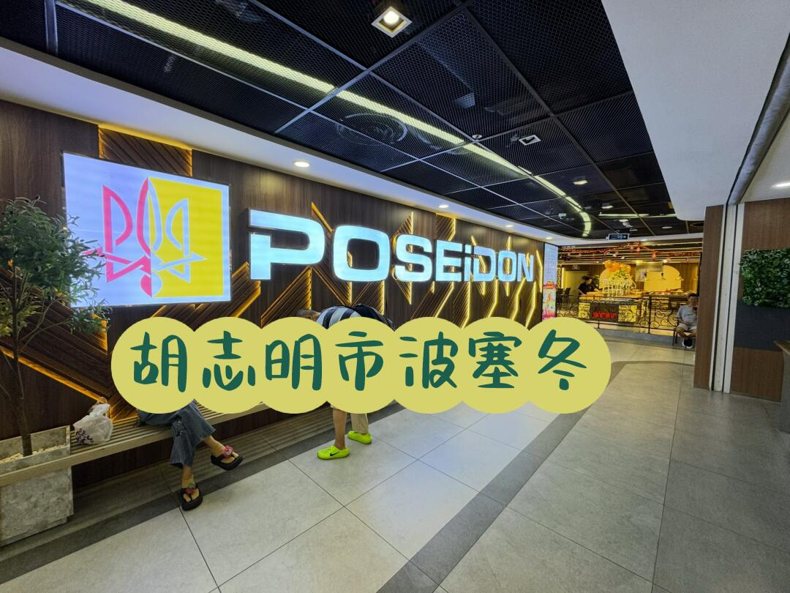
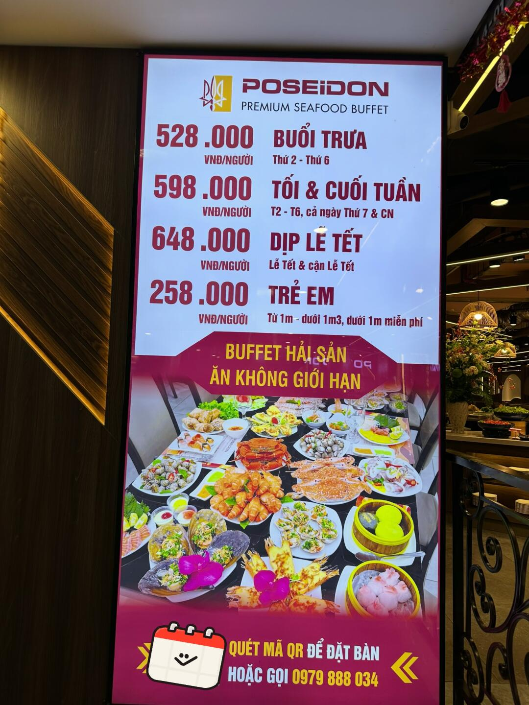
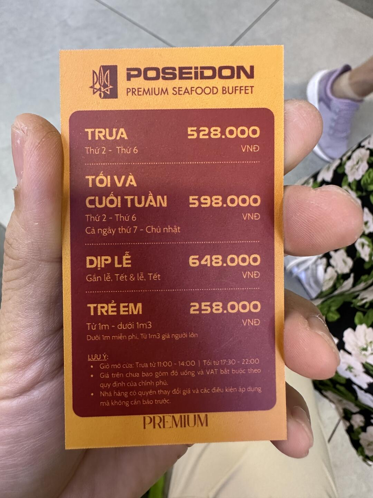
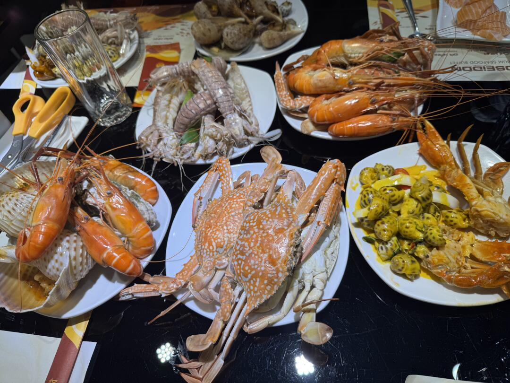
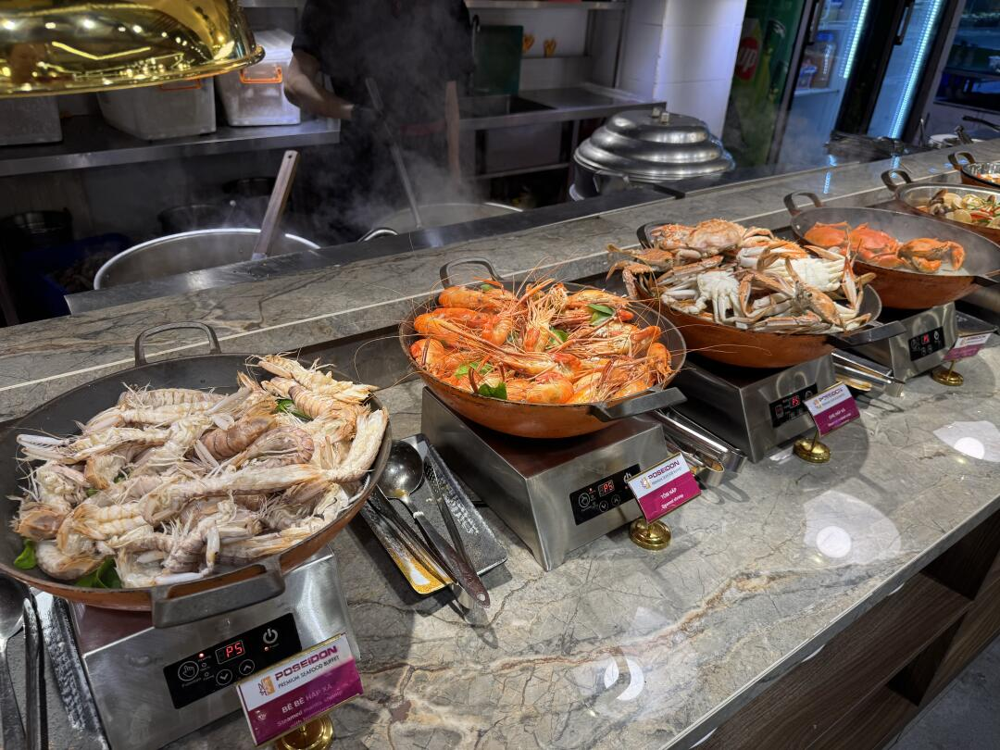
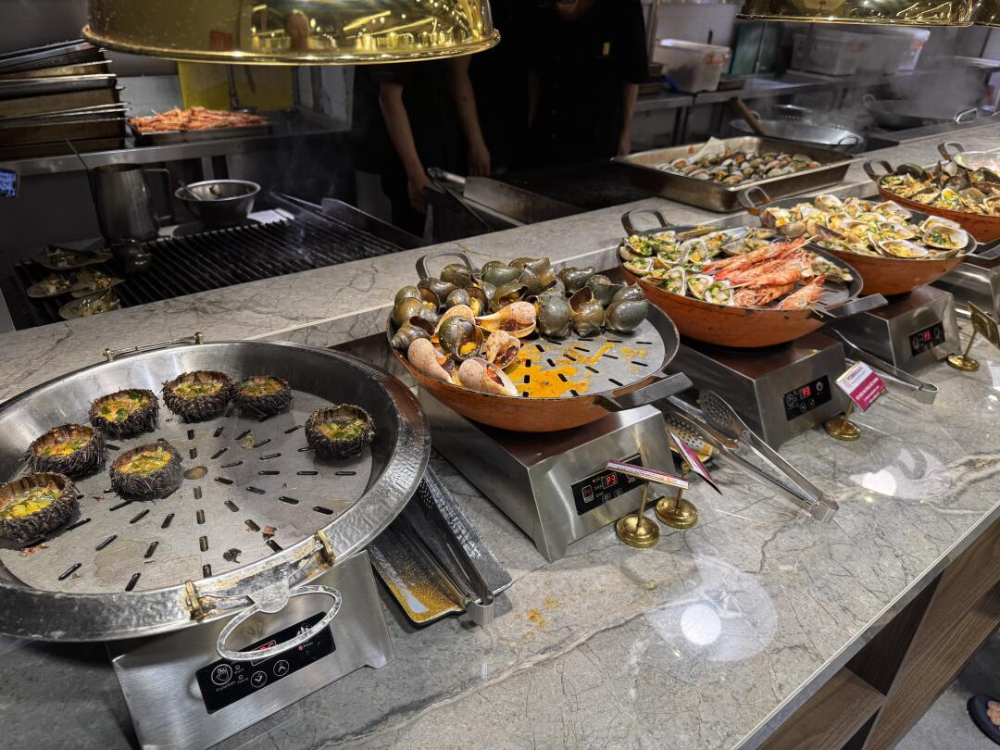
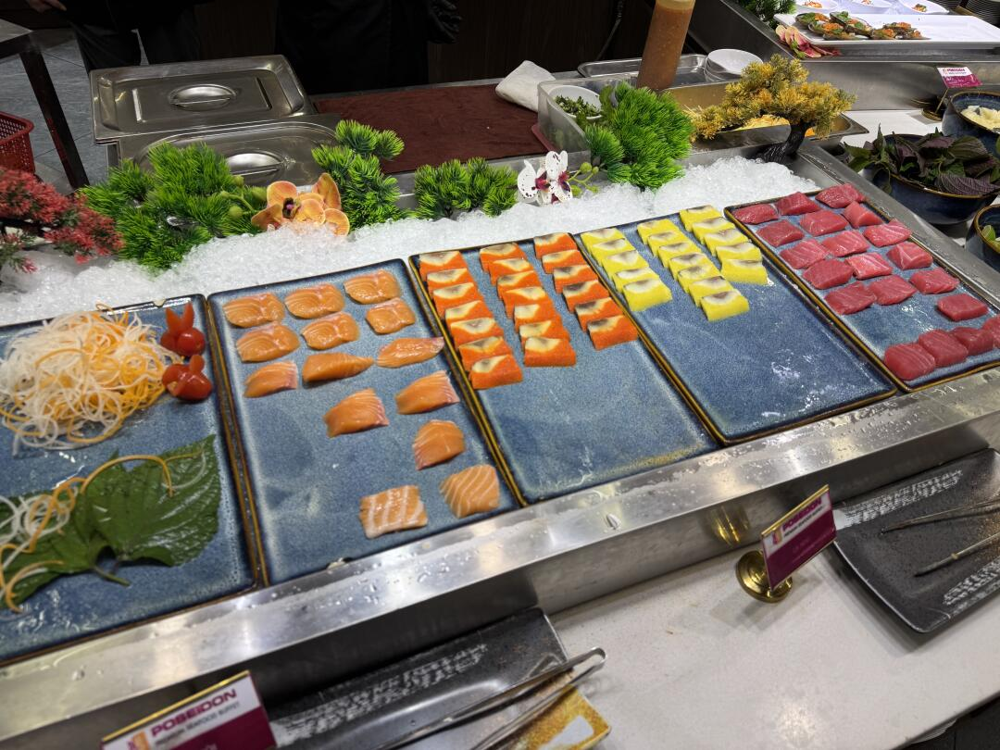
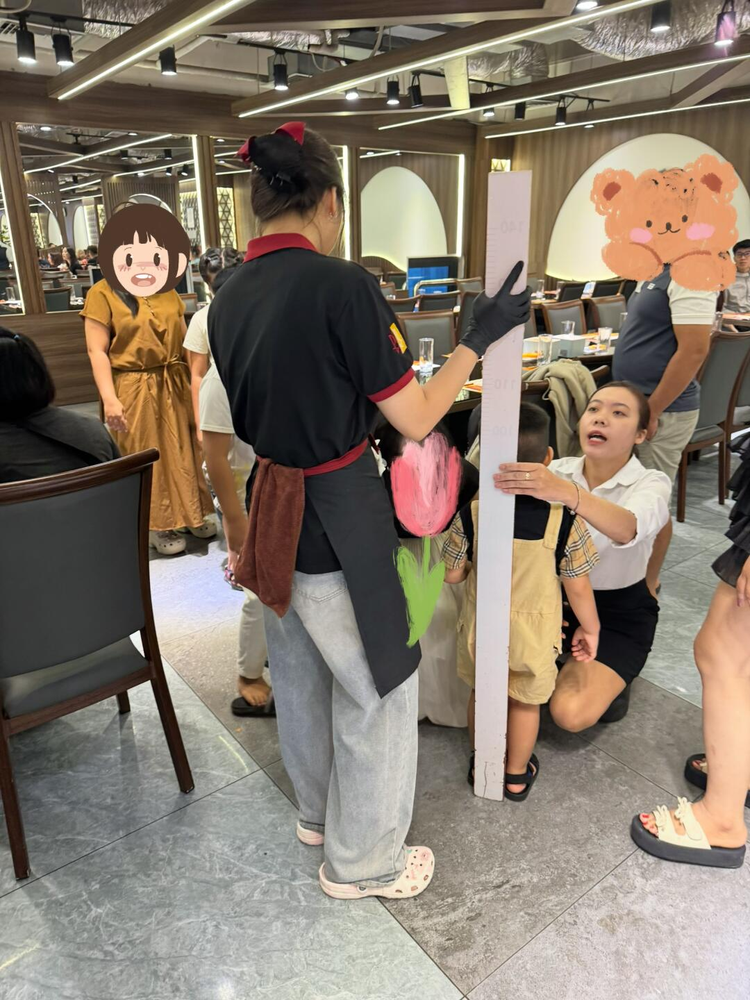
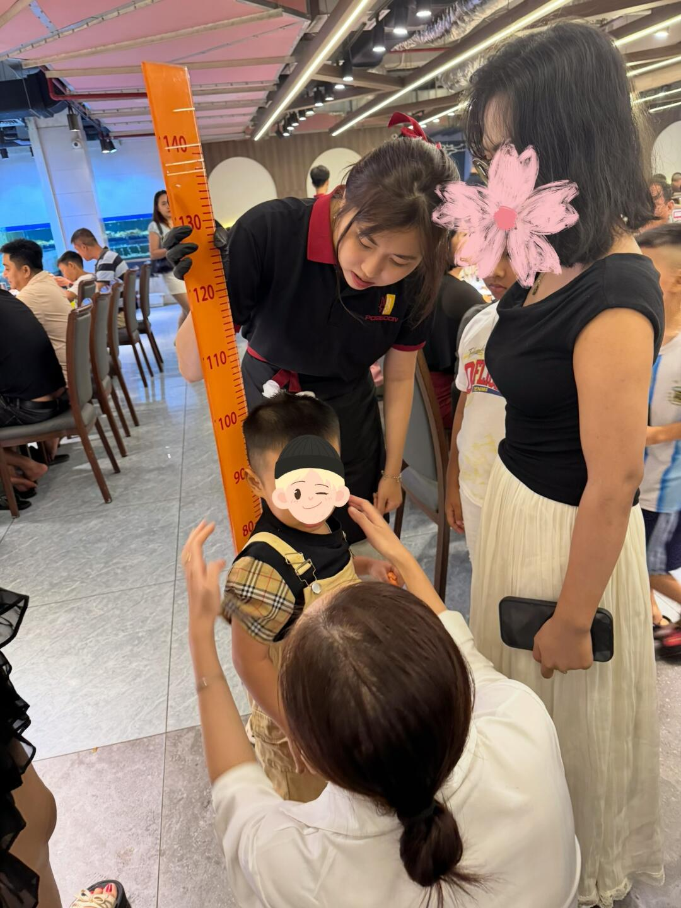

美食筆記 · 來自 Obsidian · 2026-08-18 擷取
胡志明市海鲜自助 POSEIDON 波塞冬

好像很熱門的海鮮自助餐廳波塞冬，我也打卡了一下，也來分享一下。
我們是週六晚餐去的。熱門應該是熱門的，5:30 開始，但提前就有很多人坐在門口等了，其實沒預約也有位置的，我們差不多 5 點到的。
- 店名：Buffet Poseidon（波塞冬）— 海鮮自助，多家分店
- 主分店：Tầng 5, Satra Centre Mall, 1466 Võ Văn Kiệt, Quận 6｜⭐ 4.8（1563 則）
- 其他分店：Vincom Plaza 3/2 Q10（⭐ 4.5）、Thảo Điền（⭐ 4.5）、Pearl Plaza Bình Thạnh（⭐ 4.4）
- 營業時間：每日 11:00 – 14:00、17:30 – 22:00（午/晚兩段）
- 電話：0988 669 820（主分店）
- 平日午餐（週二至六）：528,000đ
- 週末/節日晚餐（含週日）：598,000đ（≈ 170 人民幣/人）
- 春節期間：648,000đ
- 兒童：258,000đ（1m 以下免費、1m-1.3m 兒童價、1.3m 以上按成人全價）
- 價格含稅，不含飲料（酒水單點另計）
- 菜品豪橫＋新鮮：皮皮蝦挺大隻、螃蟹肉很滿、上菜不拖不用搶
- 品種超多：龍蝦、長腳蟹、花蟹、蒸海膽、貝類、壽司/生魚片吧、烤物、水果甜點、珍珠奶茶
- ⚠️ 酒水單點收費（跟國內不一樣！）——珍珠奶茶算甜品不算酒水，自助餐第二法則：從食物中獲取水分，比如西瓜，不要喝水，喝水會虧本🤣
- 衛生吐槽：用餐時旁邊桌上爬蟑螂，拍死後服務員桌子不擦，汁液抹一桌就安排客人入座
- 身高測量嚴格：1.3m 以上按成人收費，有小朋友被反覆測量到哭
- 總結：入鄉隨俗，總體性價比很高，食材、價格沒得說，值得體驗
📸 實拍（共 9 張）








📌 資料來源：內容與全部 9 張照片來自小紅書實地帖文（Pebble 擷取至 Obsidian，2026-08-18）。
營業時間、價格與電話可能變動，出發前建議以現場或官方最新資訊為準。